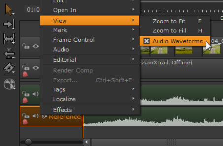

可视化音频波形有助于与视频事件同步，以及 Nuke 工作室 默认情况下，在时间轴中显示波形。
音频剪辑实例的操作方式与视频剪辑实例相同，因此将波形与 时间线编辑工具 使您能够快速同步音频和视频事件。音频剪辑实例也支持 淡入 , 淡出 ,和 溶解 转换方式与视频相同。请参阅 添加过渡 欲了解更多信息。
您可以通过在时间轴中单击鼠标右键并选择来打开和关闭波形显示 视图 > 音频波形 。您还可以控制波形在启用时的显示方式。打开 偏好 并导航到 面板 > 时间线 在完整和之间切换 半波形 .

在音频重的项目中显示波形可能会导致时间线显著减慢，因此 Nuke 工作室 包括限制可用于波形显示的系统内存量的首选项。在首选项中，导航到 性能 > 缓存 > 音频波形 并设置 波形存储器 控制到所需的数量。
|
|